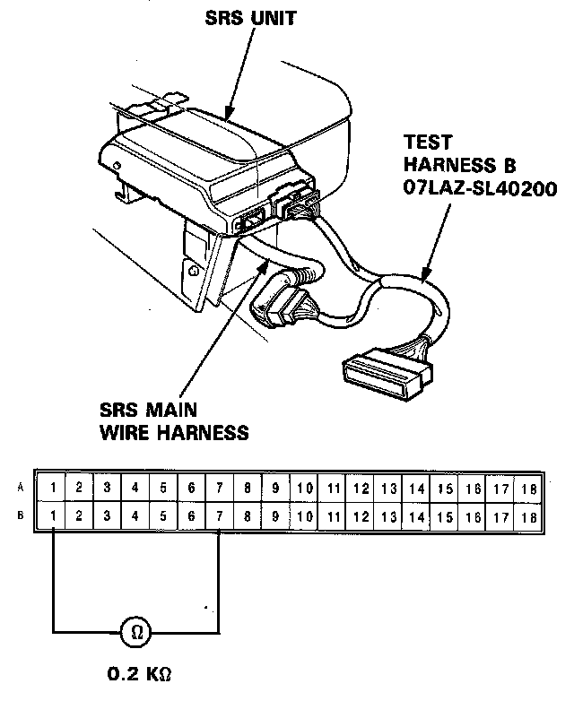
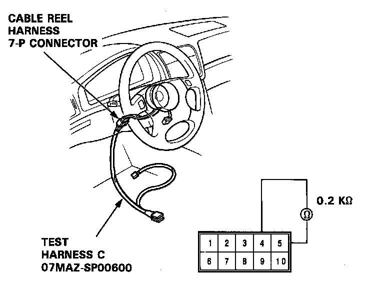
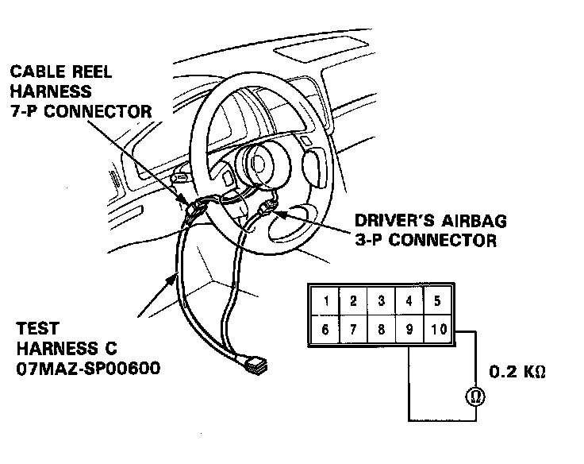

Failure Mode F

Mode F: Open in driver's airbag inflator or cable reel.
1. Disconnect the battery negative cable and then disconnect the positive cable. Install the short connector to the front passenger's airbag - refer to "Indicator Light Troubleshooting", caution notice.
2. Connect Test Harness B between the SRS unit and SRS main harness's 18-P connector. Measure the resistance between the B1 and the B7 terminals.
- If resistance is more than 0.2K ohms, go to step 3.
- If resistance is less than 0.2K ohms, the SRS unit is faulty. Substitute a known good SRS unit and recheck the voltages according to the chart on page 23-350.
3. Disconnect the cable reel harness and main harness 7-P connector from the SRS main wire harness, then connect the SRS test harness C only to the cable reel harness side of the 7-P connector.
4. Measure the resistance between the No.4 terminal and the No.5 terminal.

- If resistance is more than 0.2K ohms, go to step 5.
- If resistance is less than 0.2K ohms, the SRS main harness is faulty. Replace the SRS main harness and recheck the voltages according to the chart in the "Indicator Stays On Continuously" procedure.
5. Disconnect the driver's airbag 3-P connector from the cable reel harness, then connect the Test Harness C to the driver's airbag 3-P connector. Measure the resistance between the No.9 terminal and No. 10 terminal.

- If resistance is less than 0.2K ohms, the cable reel is faulty. Replace the cable reel and recheck the voltages according to the chart in the "Indicator Stays On Continuously" procedure.
- If resistance is more than 0.2K ohms, the inflator is faulty. Replace the airbag assembly and recheck the voltage according to the chart in the "Indicator Stays On Continuously" procedure.